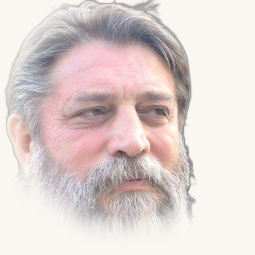

Poet, analist, filosof și om de radio cu peste 30 de ani de experiență în televiziune și radio. Fondator Radio Vest (1995). Nouă volume de poezie publicate la Editura Mirton.
Scrie poezie, eseu filosofic și analiză geopolitică — trei universuri distincte, același semn.
Radio online care combină muzică de calitate din toate genurile cu intervenții de 30–35 de secunde între piese — comentariu neuroștiințific despre efectele muzicii asupra creierului.
30 de emisiuni pe grila săptămânală. Bloc tematic prime time luni–vineri 19:00–20:00. Licență CNA în proces de obținere.
Contact & Social